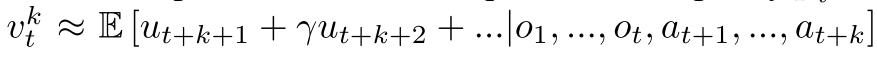
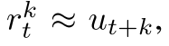
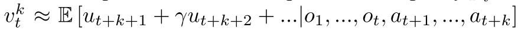
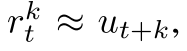
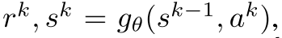

3. 游戏AI-MuZero
paper:Mastering Atari, Go, Chess and Shogi by Planning with a Learned Model
核心: ==把树搜索与model-based算法结合. 核心思想是model预测与planning直接相关的量(reward, action-selection policy, value function), 而不是真的去预测状态==.
模型输入一个观测, 将其transform为隐状态, 然后把上一个隐状态和假设的下一步动作作为输入进行循环迭代更新. 其中每一步都输出预测的policy (e.g. the move to play), value function (e.g. the predicted winner), and immediate reward (e.g. the points scored by playing a move). 模型使用end-to-end训练, 目标是准确估计这三个量, 让搜索产生的策略估计和值估计与与观察到的奖励相匹配.
对隐状态没有直接限制和语义假设, 不用重构观测, 减少了模型的输入和输出的数据量. 只要可以很好地表示当前和未来value和policy就可以.
1. 相关工作
- 基于前向搜索的planning算法依赖于环境动力学知识.
- model-free算法比较成功, 它直接与环境交互进行迭代. 但在围棋这种需要前向思考的问题中, 表现不好.
- model-based算法先学习环境模型, 然后基于该模型进行planning. 包括状态转移模型和reward模型两部分. 一般算法包括表示学习, 模型学习, planning三块.
- Value equivalent models, 端到端预测值函数地model-based方法. 基于value equivalence假设. 从一个状态出发, 经过抽象MDP的trajectory和真实轨迹的trajectory的环境奖励等价. 这种模型只预测值, 不关注动作. 这样抽象的MDP的状态转移就不必是真实的环境模型, 而是可以看作NN的一个隐藏层. 用TD等方法训练, 让期望累积回报与环境真实期望值相匹配.
- Value equivalent models后来扩展到optimising value (with actions). TreeQN算法学习抽象MDP模型i, 使得在模型(树结构的神经网络)上进行树搜索逼近最优值函数. Value iteration networks学习local MDP模型, 使得模型(CNN)的值迭代过程逼近最优值函数. Value prediction networks基于真实动作学习MDP, 展开的MDP累积奖励(限制在简单前向搜索过程的真实动作序列)与真实环境奖励匹配. 该算法与MUZero相似, 但是没有policy预测过程.
2. MuZero Algorithm
 |
|---|
 |
2.1. 模型训练
在每个时间步, MDP 展开步, 与从MCTS actor trajectory中抽样的序列进行对齐. 其中对于Atari游戏使用prioritized replay抽样, 并调整loss的重要性采样率; 对于棋盘类游戏, 使用均匀采样.
同时对于抽样得到的每一个观察都有一个对应的MCTS策略, 估计值, 环境奖励. 在展开的每一步都有相应的loss, 加起来组成MuZero的loss.
每一步模型基于以前观察和未来真实动作, 预测三个值:  ,  和立即回报  其中也是真实奖励.
,  和立即回报  其中也是真实奖励.
每个时间步t, 模型本分成三个部分: a representation function, a dynamics function, a prediction function. 动态方程  反应MDP结构信息. 策略和值函数基于内部状态进行预测,  与Alpha Zero相似. 初始状态用表示函数h抽象.
与Alpha Zero相似. 初始状态用表示函数h抽象.
2.2 树搜索过程
有了上述模型, 就可以进行前向搜索了. 最简单的方法就是生成k个动作序列最大化值函数. 为了提高模型泛化性能, 使用MCTS加入planning. 在进行MCTS时可以利用模型的policy, value and reward estimates. 之后基于MCTS生成的策略执行动作.
2.3 loss
训练模型时, 使用真实K步的动作和奖励进行逼近.
- 与AlphaZero相似, the improved policy targets are generated by an MCTS search; 首要目标是减少和 之间的误差; 值函数也是通过模拟游戏得到的.
- 与AlphaZeor不同的是, 本文允许对未来搜索值的n步bootstrapping, 得到长时的折扣奖励 . 最终结果为
 .
. - 第二个目标是最小化预测价值和 目标价值的误差.
- 第三个目标是最小化预测奖励和真实奖励之间的误差/
最后, 总的loss如下
(1)
同时, 为了在不同的展开步骤中让梯度大小大致相似, 在两个单独的位置缩放梯度:
- 对每个头的loss乘一个, 其中K是展开步的大小. 可以保证梯度大小量级差不多.
- 在动态方程开始的梯度乘, 保证动态方程的总梯度保持常数.
同时, 对隐状态也缩放到[0, 1], 保证和动作拼接时不会有太大影响. 
2.4 函数汇总
Figure S2. Equations summarising the MuZero algorithm. Here, refers to the representation of a real number x through a linear combination of its adjacent integers, as described in the Network Architecture section.
3. 实验和分析
3.1 实验设置
- K=5.
- 棋盘类游戏 100万个2048的minibatch; Atari100万个1024的minibatch
- 注意, 对于棋盘类游戏, bootstrap到游戏结束, 等于预测最终结果; 对于Atari, n=10.
- MC模拟: 棋盘类800步, Atari50步.
- 3种网络都使用ResNet, 输入相应的隐状态和动作拼接的plane.所有网络都用256个隐层.
MCTS过程, 节点都是隐状态及其统计信息. 并且保存了state transition and reward table.
- 在selection阶段, 基于隐状态表和reward表选择动作; 为了解决有些环境的即时奖励是unbounded的, 使用normalized Q值计算UCB.
- 在Expansion阶段, 用动态方程从叶子生成新节点添加到搜索树里. 搜索算法每次模拟只使用一次动态方程和预测函数, 所以计算复杂度和AlphaZero一样.
- Backup步骤, 计算累积折扣奖励(bootstrapping from the value function). 然后更新Q和N.
棋盘类游戏: 模型训练使用16个TPU, selfplay使用1000TPU; Atari: 训练8 TPUs,32 TPUs用来selfplay.
3.2. MuZero与AlphaZero对比
- AlphaZero的planning包括两个方面: 1)模拟对局根据规则更新状态, 执行树搜索; 用神经网络预测叶子节点的策略和值函数.
- AlphaZero在三个地方使用了规则: 1) 树搜索的状态转移; 2) 树节点的可用动作; 3) 搜索树的终止状态. MuZero中, 所有这些都被一个隐式模型所取代.
- State transitions. AlphaZero通过真实模拟对局进行状态转移; MuZero在搜索时使用动态模型. 通过该模型, 搜索树的每个节点都被表示为隐状态, 该隐状态通过前一个隐状态和动作得到当前状态

- Actions available. AlphaZero用合法动作mask网络产生的策略. MuZero只在根节点mask合法动作, 在后续搜素时不加mask信息. 因为网络可以学习不去拟合从未发生过的动作.
- Terminal nodes. AlphaZero在终止状态时用真实值代替网络预测值. MuZero始终用网络预测值, 此时树搜索可以proceed past终止节点, 只不过对这种节点都预测相同的值. 在训练时通过把终止状态视为吸收状态absorbing states来实现.
- State transitions. AlphaZero通过真实模拟对局进行状态转移; MuZero在搜索时使用动态模型. 通过该模型, 搜索树的每个节点都被表示为隐状态, 该隐状态通过前一个隐状态和动作得到当前状态
- MuZero应用范围更广, 可以用于即时奖励不为0的环境. AlphaZero只用于终止状态有奖励的环境.
相关论文
TreeQN and ATreec: Differentiable tree planning for deep reinforcement learning. Value prediction network. Value iteration networks.